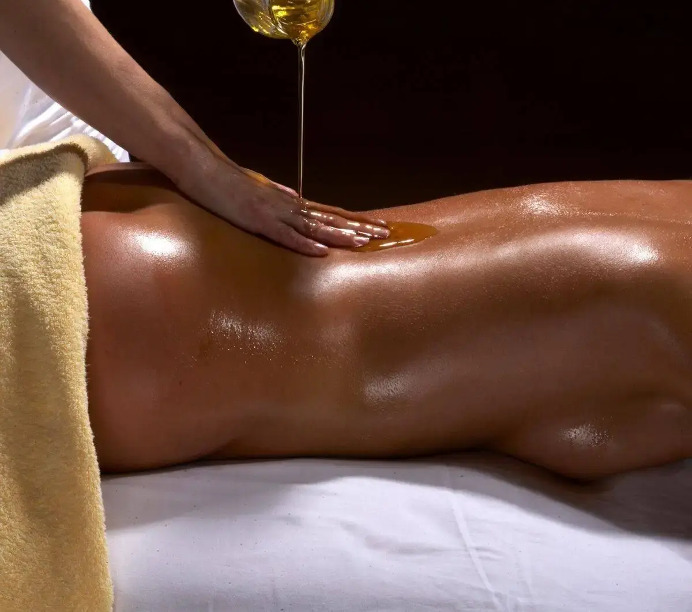

High‑performance roles at Microsoft, Amazon, T‑Mobile and other Bellevue‑based companies come with intense demands: long hours, back‑to‑back meetings, constant decision‑making, and limited time for recovery. Some executives find that a standard 60‑minute massage feels too short for accumulated neck, shoulder, back and hip tension. A 90‑minute session gives more time for full‑body work, slower pressure and a more complete relaxation experience.
At Lazizi® Wellness, we specialize in working with busy professionals in Bellevue, Medina, Clyde Hill, and the greater Eastside. Our 90‑minute executive sessions are designed to support relaxation, mobility and recovery for clients managing high‑pressure work routines. This guide explains why extended bodywork is useful for busy professionals and how it can fit into a broader wellness routine.

Why 90 Minutes Makes a Difference for Executives
A 60‑minute massage often focuses on the most urgent areas: neck, shoulders, and lower back. A 90‑minute session adds time to address connected regions: hips, glutes, forearms, jaw, and even scalp massage. This comprehensive approach helps break the cycle of tension that radiates from a single overworked area.
Some clients report that the extra 30 minutes makes the session feel less rushed and helps them settle into deeper relaxation. The extended time also permits slower, more deliberate pressure, which can be more effective for dense, chronic tension patterns from desk posture, phone use, and travel.
What the Extended Session Includes
A typical 90‑minute executive massage at Lazizi may include:
- Full‑body myofascial release – to address tightness from head to toe.
- Deep tissue focus on upper back and neck – common areas for tech‑neck and stress holding.
- Scalp and jaw tension work – helpful for clenching and mental strain.
- Shoulder and arm releases – for those who type, click, or drive for hours.
- Lower back, hip, and glute work – to counterbalance prolonged sitting.
- Gentle breathing and relaxation support – promoting a sense of calm and reset.
Pressure and focus areas are always adjusted based on your comfort and needs on the day of the session. Some executives prefer more relaxation (Swedish style), while others need firm therapeutic work on specific knots.
Where Bellevue Executives Receive Care
We offer 90‑minute sessions in two formats to fit your schedule:
- In‑studio (Bellevue): Private, quiet space with premium linens and aromatherapy options.
- Mobile outcall: We bring the table, linens, and equipment to your home in Medina, Clyde Hill, Somerset, or your office in downtown Bellevue. This saves travel time and allows you to resume your day without leaving your environment.
Mobile executive massage is particularly popular for high‑level professionals who value privacy and efficiency.
How to Prepare for a 90‑Minute Session
- Hydrate well – drink water before and after to help muscles respond to deeper work.
- Communicate your goals – tell the therapist if you need deep tissue, relaxation, or a mix.
- Arrive on time (or have your space ready for mobile) – the full 90 minutes is valuable.
- Consider scheduling at the end of your workday – so you can go home and rest afterward.
- Combine with other wellness habits – walking, stretching, sleep, and ergonomic adjustments extend the benefits.
Why Bellevue Executives Choose Lazizi
We are a boutique practice focused on clinical and therapeutic massage for King County professionals. Sessions are tailored to the client’s current condition, pressure preference, schedule and recovery goals. Our therapists are WA‑licensed (LMT #MA6098723) with over 9 years of experience treating desk‑related pain, stress, and sports recovery.
Clients appreciate our straightforward booking system, on‑time appointments, and the ability to schedule mobile outcalls on short notice when their week becomes unpredictable.
Learn more about our 90‑minute executive and deep tissue massage services in Bellevue and Seattle. For at‑home convenience, explore mobile massage options for Bellevue, Medina, Clyde Hill and King County.
For executives seeking ongoing recovery, we recommend a regular schedule of 90‑minute sessions every 3–6 weeks, complemented by ergonomic workstation adjustments and light daily mobility work.
Give yourself the full reset you deserve
Book a 90‑minute executive massage in Bellevue, Medina, Clyde Hill or anywhere in King County. Mobile outcall available.
Book Your Session →Frequently Asked Questions – Executive Massage
What is the difference between a 60‑minute and 90‑minute massage?
A 90‑minute session allows more time for full‑body work, deeper pressure on chronic tension areas, and additional focus on stress reduction techniques like breathing work or scalp massage. It can feel less rushed and more restorative.
How often should Bellevue executives get a 90‑minute massage?
Many executives schedule a 90‑minute session every 3–6 weeks for maintenance. During high‑stress periods, monthly or bi‑weekly sessions may be helpful, depending on individual needs and therapist recommendations.
Do you offer mobile 90‑minute massage for executives in Bellevue?
Yes. Lazizi Wellness provides mobile outcall massage in selected Bellevue areas, including private homes and office suites. A 90‑minute mobile session is available subject to scheduling and travel radius.
Can massage really improve mental clarity and focus?
Many clients report feeling more clear‑headed and less mentally fatigued after massage, likely due to reduced muscle tension, improved sleep, and lower perceived stress. It is not a medical treatment for cognitive issues, but a helpful part of a wellness routine.